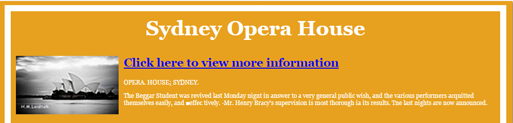

With the feedbacks and suggestions we received, I wrote the coding to retrieve and filter the images from the Trove API. For the date issue of being unable to include those natural landmarks, we decided to use the issued dates of the images instead of the construction completion dates. This was a major change to our application. Even though this had changed the original concept of our idea, it greatly reduced the difficulties for creating our application.
With the issued dates available, I then created a JavaScript for checking if the users have placed all the images in correct order according to the dates. If they haven't put all the images, a message will show up to let the users know that the game is not finished. After all the images were put in, if the order was incorrect, when the check button was pressed, it would tell users which image was in the wrong position. If the order was correct, the users will be navigated to the winning page.
In the testing stage, it was found that even though the range of landmarks could include those natural places with the change made to check the order, the purpose of winning the application is not clear. Since the order of the landmarks’ images is checked according to the issued dates, the team is told that using only one landmark in each game will make the purpose of winning much clearer. Through testing, the application really achieved a more sensible, meaningful and clearer purpose since all the images with different issued dates are based on one place only rather than so many different ones.
Also, if user played with the images for different landmarks, then information about all those different landmarks may have to be shown after the user wins the game, that might cause some young audiences lose their interests in reading due to a lot of information provided. However, if user only gets to play a game for one same landmark only, then the information shown to them will be about that particular place only so that young groups will be more easily engaged to read on.
Besides all the technically unsolvable issues, due to the lacking of a strong art designing background in our team, the appearance of our application was another difficulty for us to solve. This was also a very critical but unfortunate challenge which cannot be overcome by the team. In the final stage of design, I changed the background to something more attractive. Also, I resized all the elements in the application to allow small screen contains all of them in the original resolution. The check and menu buttons were lifted up so that users didn't need to scroll the window to see them. I also added some hovering effect to the buttons to improve the interactivity of the application.
As Lorna suggests that since we have already changed our concept idea to place the images of Australian landmarks according to their issued dates, it is much better to get the images of only one landmark so the purpose of winning is clearer. This was really a useful advice for us because it really provides a better user experience.
This learning experience had indeed manifested that design problems are not completely determined, but also not completely free. Design activities can be seen as the reasoning from a set of needs, requirements and intentions to a new bit of reality, consisting of a (physical) structure and an intended use. This process of reasoning is non-deductive: there is no closed pattern of reasoning to connect the needs, requirements and intentions with a form of an artefact and a mode of use.[The Problem of Design Problems, published by Kees Dorst]
Unfortunately, there are still some flaws in our finished application. For example, in our winning page, which after the users win the game, will contain the information generated from Trove about the landmarks users just played with. Even though, the historical knowledge in the article is not quite what I hoped to achieve. Furthermore, because of our low-level coding skill, some of the very useful functions in our application cannot be achieved. For example, in our application, users will have to drag the images from one box to another which could be better replaced by clicking action. Also, after users have put all the images in the box to check the order, they are only allowed to move those images from left to the right end. The entertaining and interacting values are hence greatly reduced which those two are quite critical in design.
{kind=link}
{kind=link}
{kind=link}
{kind=link}
{kind=link}
{kind=link}
{kind=link}